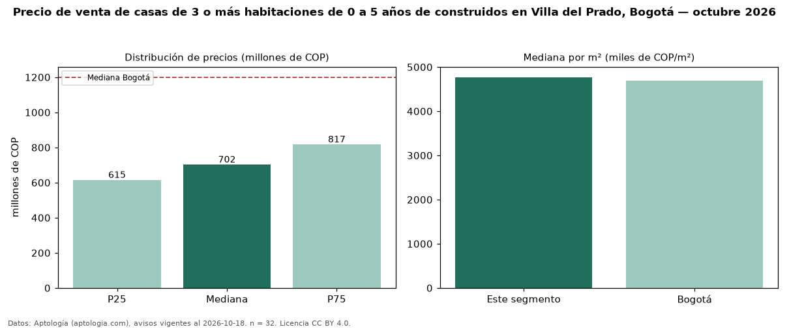

Precio de venta de casas de 3 o más habitaciones de 0 a 5 años de construidos en Villa del Prado, Bogotá — octubre 2026
Con 32 avisos vigentes, el precio mediano de casas de 3 o más habitaciones de 0 a 5 años de construidos en venta en Villa del Prado (localidad de Suba), Bogotá es COP 702 millones. Frente a la mediana de las casas de 3 o más habitaciones en venta de Villa del Prado (COP 680 millones, n = 65), queda 3 % por encima; este segmento reúne el 49 % de esos avisos. Por metro cuadrado, la mediana es COP 4,77 millones/m² (n = 31), 4 % por encima de las casas de 3 o más habitaciones en venta de Villa del Prado (COP 4,60 millones/m²). El área mediana anunciada es 155 m². El estrato más frecuente es 4 (97 % de los avisos con estrato). La mediana de todas las casas en venta de Bogotá es COP 1,20 mil millones (−41 % de diferencia). La mitad central de los avisos va de COP 615 millones a COP 817 millones (razón 1,3), una dispersión baja. Datos: Aptología (aptologia.com), CC BY 4.0 — https://www.aptologia.com/casas-en-venta/bogota/villa-del-prado. Archivos: PDF, CSV con las cifras y gráfica PNG.

| Avisos únicos | 32 |
|---|---|
| Percentil 25 | COP 615.000.000 |
| Mediana | COP 702.500.000 |
| Percentil 75 | COP 817.354.000 |
| Mediana por m² | COP 4.769.230 |
Fuente: avisos vigentes de portales inmobiliarios recopilados por Aptología, deduplicados (mínimo 30 avisos únicos por celda). Precios pedidos, no cerrados. Fecha: 2026-10-18.